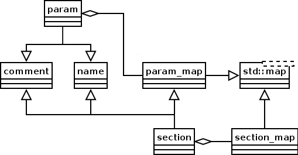

Go to the Boost-Extra Home Page.
The ini_file classes are used to read and write INI files. The format of an INI file is defined as follow:
There is an example:
; INI file sample [section1] var1=value1 var2 = value2 [section2] var3= value3 var4 =value4
An INI file is represented by a set of sections and one set of parameters per section. Sets are defined as maps. Sections and parameters have a name, a comment and parameters also have a value. All of these objects are represented below:
|

Fig 1. Representation of the ini_file classes.
|
So creating and saving an INI file comes down to:
// create an ini file and save it to std::cout
int main(int argc, char *argv[])
{
ini_file::section_map ini;
ini["section1"]["var1"] = "value of var1";
ini["section1"]["var2"] = "value of var2";
ini["section2"]["var3"] = "value of var3";
ini["section2"]["var4"] = "value of var4";
std::cout << ini;
};
In a similar fashion, it is possible to read and use an INI file by:
// read an ini file from a stream and print out the content
int main(int argc, char *argv[])
{
ini_file::section_map ini;
{
// first we create a file that we can then read
std::fstream output;
output.open("test_file.ini", std::fstream::out);
output << "; This is an auto-generated test file." << std::endl;
output << "[section1]" << std::endl;
output << "var1=This is variable ONE" << std::endl;
output << "var2=This is variable TWO" << std::endl;
output << "[section2]" << std::endl;
output << "var3 = \" This is \\\"variable\\\" THREE \" " << std::endl;
output << "; Comment on variable 4" << std::endl;
output << "var4=This is variable FOUR" << std::endl;
} // file closes
// now try to read it and print out the content
std::fstream input;
input.open("test_file.ini", std::fstream::in);
input >> ini;
std::cout << "section1 -> " << ini["section1"];
std::cout << "section1.var1 -> " << ini["section1"]["var1"];
std::cout << "section1.var2 -> " << ini["section1"]["var2"];
std::cout << "section2 -> " << ini["section2"];
std::cout << "section2.var3 -> " << ini["section2"]["var3"];
std::cout << "section2.var4 -> " << ini["section2"]["var4"];
};
These classes are not thread safe. However, if read once from disk and then used only as constant objects, it will work even if accessed between multiple threads (assuming that the boost::shared_ptr<> is thread safe.)
Ease of use to read and write INI files including comments (comments aren't getting lost.)
namespace ini_file
{
namespace ini_exceptions
{
class ini_file_exception : std::exception {};
class section_name_missing : ini_file_exception {};
class invalid_section_name : ini_file_exception {};
class param_name_missing : ini_file_exception {};
class invalid_param_name : ini_file_exception {};
class invalid_parameter : ini_file_exception {};
class param_without_section : ini_file_exception {};
class invalid_quotation : ini_file_exception {};
} // namespace ini_exceptions
struct param : ...
{
param(const std::string& _name);
const std::string& get_name() const;
void set_comment(const std::string& _comment);
const std::string& get_comment() const;
void set_value(const std::string& _value);
const std::string& get_value() const;
param& operator = (const std::string& _value);
operator const std::string& () const;
};
struct param_map : ...
{
void insert(boost::shared_ptr<param> _p);
param& operator [] (const std::string& _name);
const param& operator [] (const std::string& _name) const;
};
struct section : ...
{
section(const std::string& _name);
const std::string& get_name() const;
void set_comment(const std::string& _comment);
const std::string& get_comment() const;
void insert(boost::shared_ptr<param> _p);
param& operator [] (const std::string& _name);
const param& operator [] (const std::string& _name) const;
};
struct section_map : ...
{
void insert(boost::shared_ptr<section> _p);
section& operator [] (const std::string& _name);
const section& operator [] (const std::string& _name) const;
};
extern std::istream& operator >> (std::istream& in, section_map& _section_map);
extern std::ostream& operator << (std::ostream& out, const param& _param);
extern std::ostream& operator << (std::ostream& out, const section& _section);
extern std::ostream& operator << (std::ostream& out, const param_map& _param_map);
extern std::ostream& operator << (std::ostream& out, const section_map& _section_map);
}
All the ini_file exceptions derive from ini_file_exception. In order to catch all the exceptions at once, catch this exception.
This exception is thrown when a section with no name is being saved.
This exception is thrown when the parser reading a file finds a line which starts with '[' and either does not finish with ']' or defines an empty name (only spaces or just '[]').
This exception is thrown when a parameter with no name is being saved.
This exception is thrown when the parser finds a parameter name which does not start with one of these characters: [a-zA-Z_].
This exception is thrown when parsing a file and the variable name is not followed by an equal sign and a value.
This exception is thrown when parsing a file and a variable is found before a section.
This exception is thrown when parsing a quoted parameter which has no closing quotation.
param(const std::string& _name);Preconditions: the parameter name is not empty; though this is currently not enforced since we need a default parameter with an empty name (see the [] operators.)
Effects: create a parameter named
_name.Postconditions: the parameter name cannot be changed.
Throws: nothing
const std::string& get_name() const;Postconditions: the returned string cannot be modified.
Throws: nothing
void set_comment(const std::string& comment);Effects: assigns a comment to that object. Comments are written right before parameters. Comments read right before a paramater are assigned to that parameter.
Throws: nothing
const std::string& get_comment() const;Postconditions: the returned string cannot be modified; use set_comment() to modify a comment.
Throws: nothing
void set_value(const std::string& _value); param& operator = (const std::string& _value)Effects: assigns a new value to the parameter. Anything is valid except a new line character and a null character. If the parameter value starts or ends with spaces or quotes, the value will be saved quoted.
Throws: nothing
const std::string& get_value() const; operator const std::string& () const;Effects: retrieve the current value of the parameter.
Throws: nothing
void insert(boost::shared_ptr<param> _p);Precondition: if the pointer is null, nothing happens and the function returns right away.
Effects: add the specified parameter in the map of parameters. The use of a map makes it faster to retrieve parameters. However, this means you lose the possible ordering from input files.
Throws: memory allocation exceptions
param& operator [] (const std::string& _name); const param& operator [] (const std::string& _name) const;Precondition: if a parameter with the specified
_namedoes not exist:
- Non-constant parameter map
When the non-constant operator is used, a new parameter is created if none already exist with that
_name.
- Constant parameter map
When the constant operator is used, it returns an empty parameter which must not be modified. That empty parameter is not part of the map.
Effects: return the empty parameter, an existing parameter or a new parameter with the specified
_name.Throws: memory allocation exceptions
section(const std::string& _name);Preconditions: the parameter name is not empty; though this is currently not enforced since we need a default parameter with an empty name (see the [] operators.)
Effects: create a section named
_name.Postconditions: the section name cannot be changed.
Throws: nothing
const std::string& get_name() const;Postconditions: the returned string cannot be modified.
Throws: nothing
void set_comment(const std::string& comment);Effects: assigns a comment to that object. Comments are written right before sections. Comments read right before a section are assigned to that section. Comments read right after a section are assigned the the first parameter. If there is no parameter, it is assigned to the next section. If there is no other section or parameter, it is lost.
Throws: nothing
const std::string& get_comment() const;Postconditions: the returned string cannot be modified; use set_comment() to modify a comment.
Throws: nothing
void insert(boost::shared_ptr<param> _p);Precondition: if the pointer is null, nothing happens and the function returns right away.
Effects: add the specified parameter in the map of parameters. The use of a map makes it faster to retrieve parameters. However, this means you lose the possible ordering from input files.
Throws: memory allocation exceptions
param& operator [] (const std::string& _name); const param& operator [] (const std::string& _name) const;Precondition: if a parameter with the specified
_namedoes not exist:
- Non-constant parameter map
When the non-constant operator is used, a new parameter is created if none already exist with that
_name.
- Constant parameter map
When the constant operator is used, it returns an empty parameter which must not be modified. That empty parameter is not part of the map.
Effects: return the empty parameter, an existing parameter or a new parameter with the specified
_name.Throws: memory allocation exceptions
void insert(boost::shared_ptr<section> _s);Precondition: if the pointer is null, nothing happens and the function returns right away.
Effects: add the specified section in the map of sections. The use of a map makes it faster to retrieve sections. However, this means you lose the possible ordering from input files.
Throws: memory allocation exceptions
section& operator [] (const std::string& _name); const section& operator [] (const std::string& _name) const;Precondition: if a section with the specified
_namedoes not exist:
- Non-constant section map
When the non-constant operator is used, a new section is created if none already exist with that
_name.
- Constant section map
When the constant operator is used, it returns an empty section which must not be modified. That empty section is not part of the map.
Effects: return the empty section, an existing section or a new section with the specified
_name.Throws: memory allocation exceptions
extern std::istream& operator >> (std::istream& in, section_map& _section_map); extern std::ostream& operator << (std::ostream& out, const param& _param); extern std::ostream& operator << (std::ostream& out, const section& _section); extern std::ostream& operator << (std::ostream& out, const param_map& _param_map); extern std::ostream& operator << (std::ostream& out, const section_map& _section_map);Precondition: to write a parameter, section or a map thereof, all the parameters and sections must have a valid name (i.e. not empty.) A section can be empty (have no parameters.)
Effects: the >> oparator appends the content of the input stream to the specified
_section_map. If the input includes sections and parameters which already exist in the_section_map, they will be overwritten (i.e. thus you can define defaults before to use the >> operator.) The << operators print out the specified parameter. In all cases, the output ends with a newline. A section ends with an empty line. To save a section map to an init file, use the << operator accepting a_section_mapreference.Throws: the output operators (<<) can throw the ini_exceptions::param_name_missing or ini_exceptions::section_name_missing exceptions. The input operator (>>) can throw many different exceptions when the input file is invalid:
- ini_exceptions::invalid_section_name
- ini_exceptions::invalid_param_name
- ini_exceptions::param_without_section
- ini_exceptions::invalid_parameter
- ini_exceptions::invalid_quotation
Copyright (c) 2006 Alexis Wilke
Permission to copy, use, modify, sell and distribute this document is granted provided
this copyright notice appears in all copies. This document is provided "as is" without
express or implied warranty, and with no claim as to its suitability for any purpose.